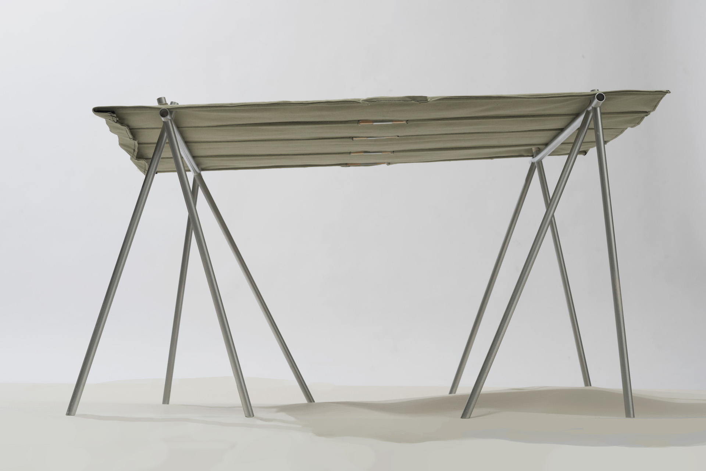
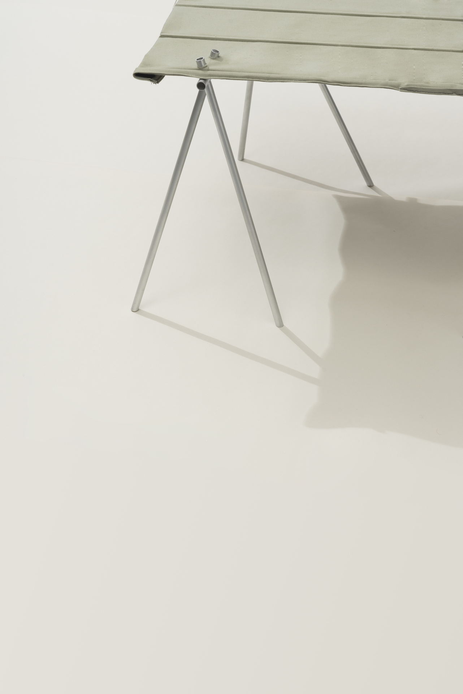
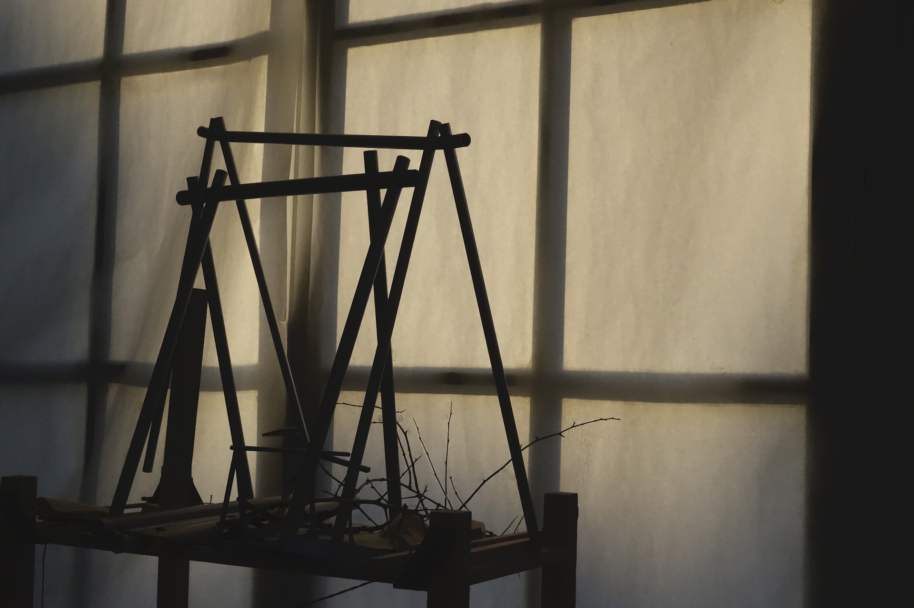
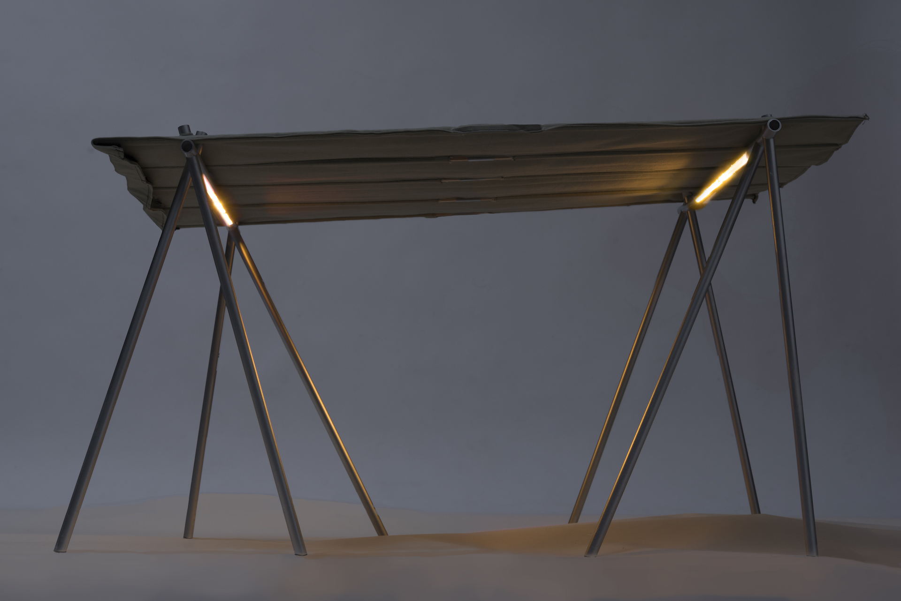
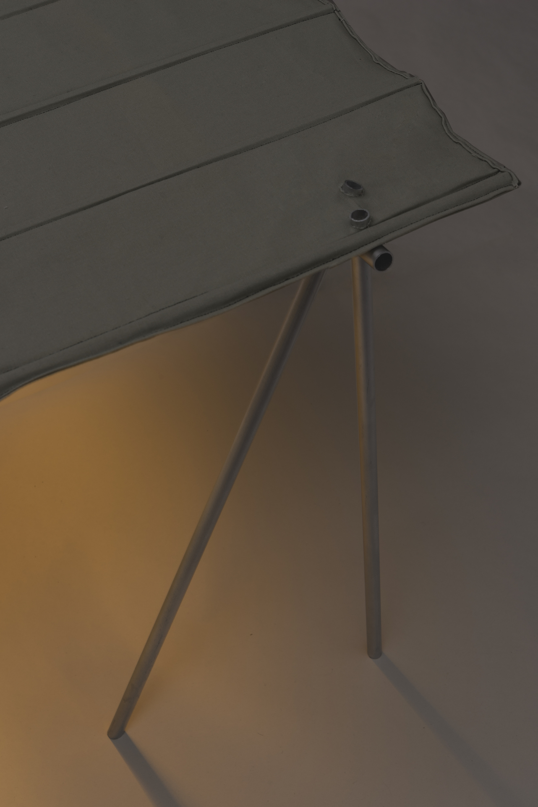
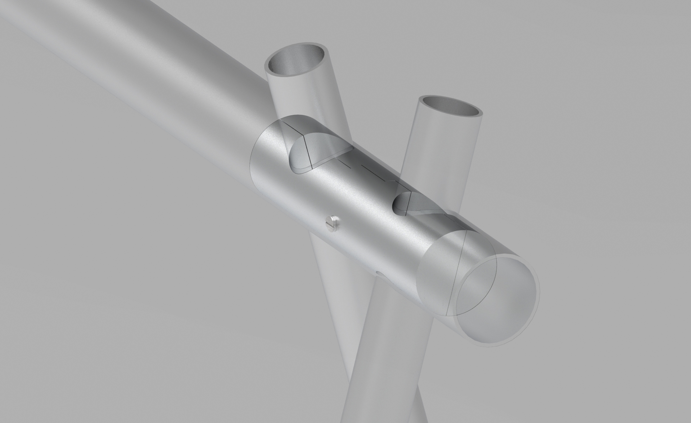

<!DOCTYPE html>
<html>
</html>

<head>
  <meta charset="UTF-8">
  <title>Juliette Collin</title>
  <meta name="viewport" content="width=device-width, initial-scale=1">
  <link rel="stylesheet" href="juliettecollin-projetsS9.css">

</head>

<body>
<section class="content-container ">

  <div class="content-orange">

        <div class="header">Juliette Collin © 2020</div>

        <a href="juliettecollin-projetsS9-en.html" class="retour">Back</a>
        <a href="#abri" class="texte-projet">4x4 Shelter
            <em>2020</em><br>
            "4x4" is a shelter designed to host the various events organized by the association "Au Sens de Barge" on the banks of the Seine. 
            Light and dismountable, two people are needed to install it. Thanks to their adjustable height, the feet of this shelter can be adapted to any topography of quay or ground. One of the gantries is positioned lower than the other in order to incline the cover and promote water flow. The feet are filled with water pumped from the Seine to ballast the shelter.
          </a>
        </div>

  <div class="content-violet">

    <div class="flex-container-projet">
      <div>
                  
      </div>

      <div>
        
      </div>
      <div>
        
      </div>
      <div>
        
      </div>

      <div>
        
      </div>

      <div>
        
      </div>


    </div>        

  </div>
</section>    

</body>

